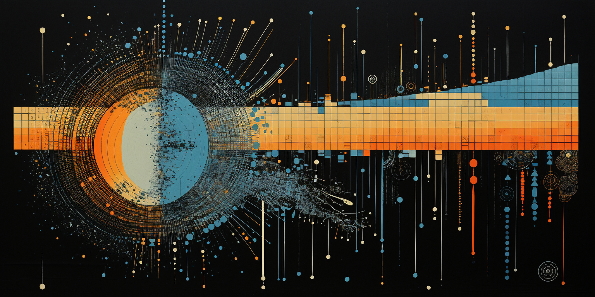

Del II - Sannolikhetsmodeller och Inferens, 7.5 hp

I kursens andra momentet behandlas inledningsvis sannolikheter, slumpvariabler och sannolikhetsfördelningar. En central del i momentet är inferens, dvs. statistiska metoder för att dra slutsatser om olika fenomen från data, bl a samband från regressionsanalys. Kursen avslutas med en introduktion till beslutsfattade under osäkerhet.
Förkortningen SDM står för kursboken Stats: Data and Models 5:e upplagan, global edition.
Under vissa föreläsningar länkar vi till Extramaterial. Det är material som inte krävs för att klara kursen, men som den nyfikne kan läsa för att få en djupare förståelse.
Föreläsningar
Föreläsning 11 - Osäkerhet och Sannolikhet.Läs: SDM Kapitel 12 och 13 | Slides
Interaktivt: slantsingling
Extramaterial: TedTalk om sannolikheter
innehåll
Sannolikhetstolkningar • Händelser • Union • Snitt • Sannolikhetsberäkningar • Venn diagram • KombinatorikLäs: SDM Kapitel 13 | Slides
Interaktivt: bayessats
Extramaterial: artikel om Bayes sats och snabbtest för Covid-19
innehåll
Betingad sannolikhet • Multiplikationsregeln • Oberoende händelser • Disjunkta händelser • Bayes sats • Lagen om total sannolikhetLäs: SDM Kapitel 14 | Slides | Kalkylark om diskret simultanfördelning och kovarians | Google docs version (view only) om diskret simultanfördelning och kovarians
Video på Athena: Kovarians
Interaktivt: normalfördelningen
innehåll
Slumpvariabler • Sannolikhetsfördelning • Väntevärde • Varians • Standardavvikelse • Normalfördelning • Slumpvariabler • Linjärkombinationer • Standardisering • Kovarians • Korrelation • Varians av summa av slumpvariablerLäs: SDM Kapitel 15.1, 15.2, 15.3, 15.6 | Slides
Interaktivt: bernoullifördelning | geometrisk fördelning | binomialfördelningen | likformig | normalfördelning
Kod: geometric.R
innehåll
Bernoulliförsök • Geometrisk fördelning • Binomialfördelning • Normalapproximation av binomialLäs: SDM Kapitel 5.3, 14.4, 15.7 | Slides
Studiematerial: Vilken fördelning? Bara SDA1 | Vilken fördelning? SDA1-3
Interaktivt: Poissonfördelningen | maximum likelihood - Poisson | exponential | student-t | allmän student-t
Kod: exponential.R
Extramaterial: Notebook - maximum likelihood för Poisson | Notebook - student-t |
widgets med 30+ fördelningar
innehåll
Likformig fördelning • Normalfördelning • Poissonfördelning • Exponentialfördelning • Student-t fördelning • PunktskattningLäs: SDM Kapitel 16.1-16.5 | Slides
Interaktivt: samplingfördelning - liten ändlig population | stora talens lag - normalapproximation för en andel | samplingfördelning för andel - ändlig population | konfidensintervall för en andel
innehåll
Population • Stickprov • Samplingfördelning för en andel • Väntevärdesriktighet • Bias och varians • Konfidensintervall för en andelLäs: SDM Kapitel 17 | Slides
Interaktivt: stora talens lag | centrala gränsvärdessatsen
Extramaterial: Notebook - stora talens lag | Notebook - centrala gränsvärdessatsen
Kod: konfidensintervall laxar | simulering för att undersöka bias
innehåll
Samplingfördelning för ett väntevärde - känd varians • Samplingfördelning för ett väntevärde - okänd varians • Konfidensintervall för ett väntevärde • Stora talens lag • Centrala gränsvärdessatsenLäs: SDM Kapitel 18 (ej Random matters på sid 579) | Slides
Interaktivt: hypotestest väntevärde | ensidigt test för internethastighet
innehåll
Hypotestest för ett väntevärde • Hypotestest för en andel • Hypoteser och nollfördelning • Kritiska värden • p-värdeLäs: SDM Kapitel 23.1-23.3 | Slides
Kod: regression lifespan data
Interaktivt: samplingfördelning regression
Video på Athena: simulera från regression i R
Extramaterial: kod för residualanalys på simulerad regressionsdata
innehåll
Linjär regression som sannolikhetsmodell • Regressionsmodellens antaganden • Residualanalys • Samplingfördelningen för minsta-kvadrat-skattningen • StandardfelLäs: SDM Kapitel 23.3-23.6 | Slides
Kod: simulera från populationsmodellen i enkel regression
innehåll
Konfidensintervall linjär regression • Hypotestest linjär regression • PrediktionsintervallLäs: SDM Kapitel 19, 20.4-20.5, 21.1-21.3 | Slides
Kod: oberoende grupper - laxar | parade grupper - online försäkringar
Videos på Athena: Fel av typ I och II | Jämföra två populationer
Interaktivt: hypotestest fel typ I och II
innehåll
Fel av typ I och II vid hypotestest • Hypotestest för att jämföra väntevärden i oberoende grupper • Hypotestest för att jämföra väntevärden för parade dataLäs: SDM 22.1 | Slides
Interaktivt: chi2-fördelningen
innehåll
Chi2-test för goodness of fit • Beslut under osäkerhet • Nyttobegreppet • Beslutstabeller • Maximera förväntad nyttaFöreläsning 23 - Räkning av gammal tenta.
Läs: Video på Athena om Bayesiansk inferens | Slides
Extramaterial: notebook - bayesiansk inferens för väntevärde i normalmodellen
innehåll
Subjektiva sannolikheter • Uppdatera apriorikunskap med dataRäkneövningar
Övningarna i kursboken Stats: Data and Models (SDM) hänvisas till med kapitelnummer följt av övningsnummer.
Övning 7 - Sannolikheter för händelser. Kombinatorik.
Uppgifter: SDM 12.2, 12.5, 12.7, 12.9, 12.12, 12.16, 12.21, 12.27, 12.29, 12.31, 12.34, 12.36, 12.39, 12.41, 12.49, 12.52.
Övning 8 - Oberoende händelser. Betingning och Bayes sats.
Uppgifter: SDM 13.1, 13.5, 13.7, 13.10, 13.12, 13.14, 13.18, 13.21, 13.24, 13.31, 13.47, 13.49.
Övning 9 - Slumpvariabler, väntevärde och standardavvikelse.
Uppgifter: SDM 14.1, 14.3, 14.9a, 14.11, 14.13, 14.21, 14.26, 14.33, 14.36, 14.43, 14.54.
Övning 10 - Sannolikhetsmodeller I.
Uppgifter: SDM 15.1, 15.3, 15.5, 15.18, 15.19, 15.21, 15.28, 15.29, 15.31, 15.41, 15.45.
Övning 11 - Sannolikhetsmodeller II.
Uppgifter: SDM 15.7, 15.49, 15.59, 15.60.
Övning 12 - Konfidensintervall.
Uppgifter: SDM 16.2, 16.3, 16.5, 16.7, 16.14, 16.16, 16.27a-c), 16.31, 17.23, 17.29, 17.31, 17.56.
Övning 13 - Hypotestest.
Uppgifter: SDM 18.1, 18.4, 18.5, 18.8, 18.10, 18.14, 18.16, 18.23, 18.27, 18.45, 18.50.
Övning 14 - Inferens för regression.
Uppgifter: SDM 23.1, 23.3, 23.5, 23.7, 23.9, 23.13, 23.15, 23.17.
Övning 15 - Jämföra grupper och chi2-test.
Uppgifter: SDM 20.11, 20.13, 20.15, 20.62, 21.19, 21.21, 22.1, 22.3.
Datorlaborationer
Datorlaboration 5 - Räkna med fördelningar i R. Simulering.
Uppgifter: html | quarto
Datorlaboration 6 - Konfidensintervall, hypotesttest och centrala gränsvärdessatsen.
Uppgifter: html | quarto
Datorlaboration 7 - Multipel linjär regression - inferens.
Uppgifter: html | quarto
Inlämningsuppgift
Inlämningsuppgift 2.
Uppgifter: instruktioner i html | quarto för inlämning